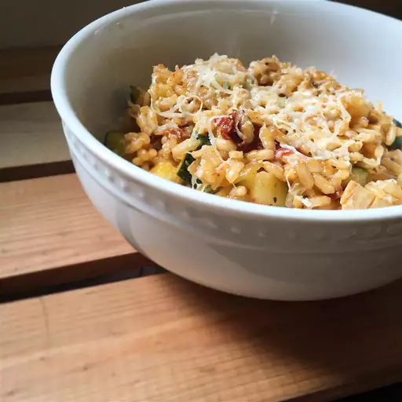

Zucchini Risotto!
Learn how to make a delicious Zucchini Risotto that will make you fall in love with this dish!
Ingredients
- 1 tablespoon olive oil
- 1/2 cup chopped onion
- 1 cup Arborio rice
- 2 1/2 cups chicken broth
- 1 zucchini, chopped
- 1/4 cup grated Parmesan cheese
Steps
- Heat oil in a large skillet over medium heat. Add onion, and cook, stirring until onion is translucent.
- Stir in rice, and cook until lightly toasted.
- Meanwhile, in a medium saucepan, bring chicken broth to a simmer. Slowly add broth to rice, one ladleful at a time, stirring until liquid is absorbed before adding more.
- When rice is just tender and all the broth is absorbed, stir in zucchini. Remove from heat, and stir in Parmesan. Serve immediately.
Back to Home